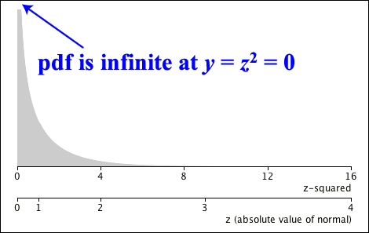
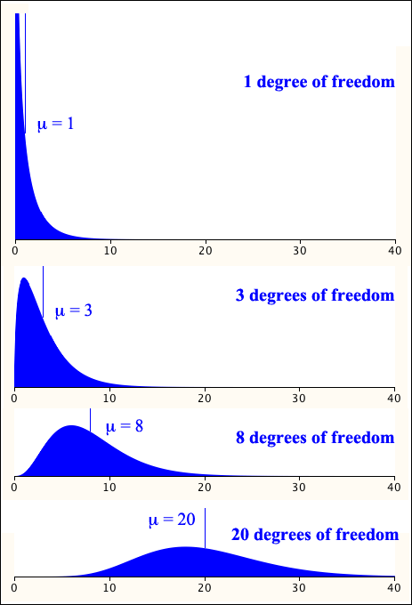
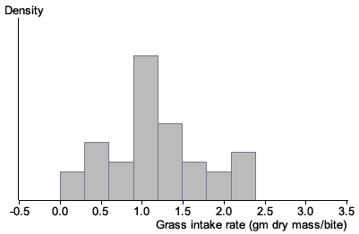
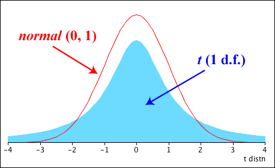
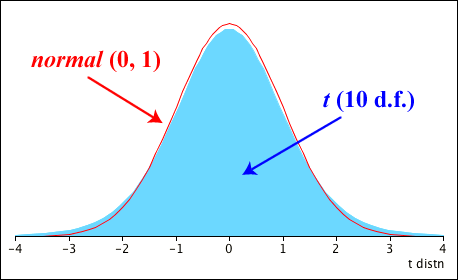
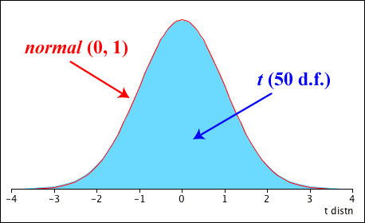
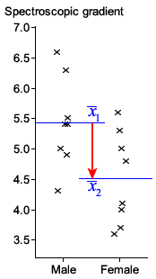
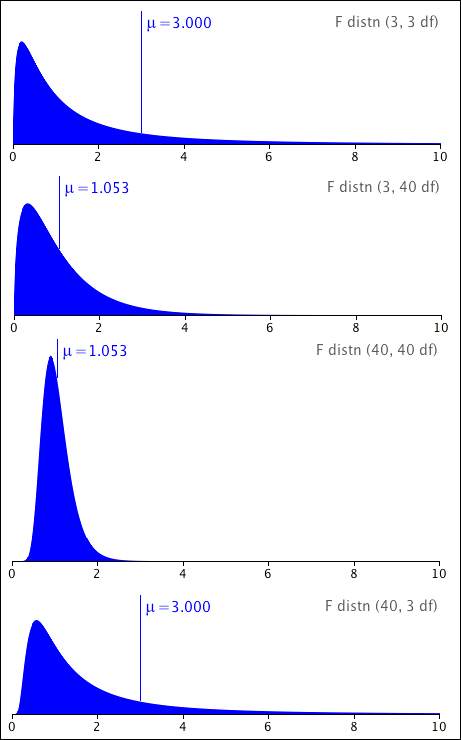
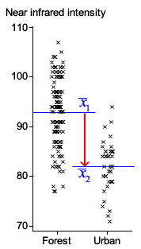

If you don't want to print now,
A simple transformation of a standard normal random variable has a distribution called a chi-squared distribution.
Definition
If a random variable, \(Z\), has a standard normal distribution,
\[ Z \;\;\sim\;\; \NormalDistn(0, 1) \]then we say that its square, \(Y = Z^2\), has a chi-squared distribution with 1 degree of freedom,
\[ Y \;\;\sim\;\; \ChiSqrDistn(1\;\text{df}) \]This also means that
\[ \frac{(X - \mu)^2}{\sigma^2} \;\;\sim\;\; \ChiSqrDistn(1\;\text{df}) \]Probability density function
The random variable \(Y \sim \ChiSqrDistn(1\;\text{df})\) has probability density function
\[ f(y) \;=\; \frac 1 {\sqrt{2\pi}} y^{\large{-\frac 1 2}}e^{\large{-\frac y 2}} \qquad\text{if } y \gt 0 \](Proved in full version)
The Chi-squared distribution is actually a special case from the family of Gamma distributions.
Relationship to gamma distribution
The \(\ChiSqrDistn(1\;\text{df})\) distribution is identical to a \(\GammaDistn(\frac 1 2, \frac 1 2)\) distribution.
(Proved in full version)
Shape of the distribution
The \(\ChiSqrDistn(1\;\text{df})\) distribution is very skew. Its pdf is infinite at zero — \(f(0) = \infty\) and its right tail is very long.

The mean and variance of the \(\ChiSqrDistn(1\;\text{df})\) distribution can be found directly from the following integrals.
\[ E[X] = \int_0^{\infty}x\;f(x) dx \spaced{and} E[X^2] = \int_0^{\infty}x^2\;f(x) dx \]However since the distribution is a special case of the Gamma distribution, we can use the formulae for the mean and variance of the Gamma distribution.
Mean and variance
If a random variable \(X\) has a \(\ChiSqrDistn(1\;\text{df})\) distribution, its mean and variance are
\[ E[X] \;=\; 1 \spaced{and} \Var(X) \;=\; 2 \](Proved in full version)
Sum of squared standard normals
We now generalise from the distribution of a single squared \(\NormalDistn(0, 1)\) variable to the sum of squares of \(k\) independent ones.
Definition
If \(\{Z_1, Z_2, \dots, Z_k\}\) are independent variables with standard normal distributions, then \(Y = \sum_{i=1}^k {Z_i^2}\) is said to have a Chi-squared distribution with \(k\) degrees of freedom,
\[ Y \;\;\sim\;\; \ChiSqrDistn(k\;\text{df}) \]Since z-scores have a standard normal distribution, this means that
\[ \sum_{i=1}^k \frac{(X_i - \mu)^2}{\sigma^2} \;\;\sim\;\; \ChiSqrDistn(k\;\text{df}) \]The properties of \(Y\) can be found by noting that
Relationship to the Gamma distribution
The \(\ChiSqrDistn(k\;\text{df})\) distribution is identical to a \(\GammaDistn(\frac k 2, \frac 1 2)\) distribution
\[ \ChiSqrDistn(k\;\text{df}) \;\;\equiv\;\; \GammaDistn(\frac k 2, \frac 1 2) \](Proved in full version)
The Chi-squared distribution's pdf can be found directly from that of the Gamma distribution.
Probability density function
A random variable \(Y \sim \ChiSqrDistn(k\;\text{df})\) has probability density function
\[ f(y) \;=\; \frac 1 {\Gamma({\large\frac k 2}) 2^{\large\frac k 2}} y^{\large{\frac k 2} - 1}e^{\large{-\frac y 2}} \qquad\text{if } y \gt 0 \](Proved in full version)
The mean and variance of a \(\ChiSqrDistn(k\;\text{df})\) random variable can be found from its equivalence to a Gamma distribution.
Mean and variance
If \(Y \sim \ChiSqrDistn(k\;\text{df})\), its mean and variance are
\[ E[Y] = k \spaced{and} \Var(Y) = 2k\](Proved in full version)
Shape of the distribution
The \(\ChiSqrDistn(k\;\text{df})\) distribution is skew with a longer tail to the right. However since
\[ Y = \sum_{i=1}^k {Z_i^2} \]where the \(\{Z_i^2\}\) are independent \(\ChiSqrDistn(1)\) random variables, the Central Limit Theorem shows that the distribution approaches the shape of a Normal distribution as \(k \to \infty\).

The following theorem is important but its proof is long and difficult.
Sample variance from a normal distribution
If \(\{X_1, X_2, \dots, X_n\}\) is a random sample from a \(\NormalDistn(\mu, \sigma^2)\) distribution, the sample variance, \(S^2\) has a scaled Chi-squared distribution
\[ \frac {n-1}{\sigma^2} S^2 \;\sim\; \ChiSqrDistn(n - 1\;\text{df}) \](Proved in full version)
We will also write the distribution of \(S^2\) in the form
\[ S^2 \;\;\sim\;\; \frac{\sigma^2}{n-1} \;\times\; \ChiSqrDistn(n - 1\;\text{df}) \]Knowing the distribution of \(S^2\) lets you find probabilities relating to the variance or standard deviation of a sample from a normal distribution.
Example
In a random sample of \(n = 20\) values from a \(\NormalDistn(\mu,\;\sigma^2)\) distribution, what is the probability that the sample standard deviation will be more than 20% higher than the normal distribution's standard deviation, \(\sigma\)?
(Solved in full version)
Pivot for a normal sample's variance
To find a confidence interval for \(\sigma^2\) based on a random sample, \(\{X_1, X_2, \dots, X_n\}\), from a \(\NormalDistn(\mu,\;\sigma^2)\) distribution, we will find a pivot — a function of the data and \(\sigma^2\) whose distribution is completely known with no unknown parameters. A suitable pivot is
\[ g(\sigma^2, X_1, \dots, X_n) \;\;=\;\; \frac{n-1}{\sigma^2} S^2 \;\;\sim\;\;\ChiSqrDistn(n-1\;\text{df}) \]where \(S^2\) is the sample variance.
Confidence interval for a normal distribution's variance
If \(s^2\) is the variance of a random sample from a \(\NormalDistn(\mu,\;\sigma^2)\) distribution, a 95% confidence interval for \(\sigma^2\) is
\[ \frac{(n-1)s^2}{\chi_{n-1,\;0.975}^2} \;\;\lt\;\; \sigma^2 \;\;\lt\;\; \frac{(n-1)s^2}{\chi_{n-1,\;0.025}^2} \]where \(\chi_{n-1,\;0.025}^2\) and \(\chi_{n-1,\;0.975}^2\) are the 2½th and 97½th percentiles of the Chi-squared distribution with \((n-1)\) degrees of freedom.
(Proved in full version)
This can be generalised in an obvious way to find interval estimates with other confidence levels by replacing \(\chi_{n-1,\;0.025}^2\) and \(\chi_{n-1,\;0.975}^2\) with other quantiles from the Chi-squared distribution. For example, to find a 90% confidence interval, \(\chi_{n-1,\;0.05}^2\) and \(\chi_{n-1,\;0.95}^2\) would be used.
These quantiles can be found using Excel. Type into a spreadsheet cell
=CHISQ.INV(\(\langle p \rangle\), \(\langle df \rangle\))
when looking for the \(\langle p \rangle\)th quantile of the Chi-squared distribution with \(\langle df \rangle\) degrees of freedom.
Question
In an experiment that investigated the grazing behaviour of dairy cows, four cows were studied while they grazed on 48 different plots of grass. The grass intake was estimated in each plot by sampling before and after the experiment, and the number of bites made by each cow was recorded. This table gives the grass intake per bite in each of the plots.
| 1.09 | 1.41 | 1.20 | 1.04 | 1.07 | 1.39 | 1.06 | 1.14 |
| 0.88 | 0.92 | 1.07 | 1.07 | 1.18 | 0.57 | 0.01 | 0.31 |
| 1.14 | 1.18 | 0.58 | 0.74 | 0.14 | 0.48 | 0.91 | 0.37 |
| 2.19 | 1.17 | 2.34 | 1.69 | 1.97 | 1.04 | 1.76 | 1.26 |
| 1.62 | 0.81 | 1.81 | 2.06 | 2.27 | 1.24 | 0.02 | 1.46 |
| 2.29 | 2.28 | 1.40 | 0.60 | 1.41 | 0.49 | 1.06 | 1.58 |
There are only 48 observations, so it is impossible to be sure of the shape of the underlying population distribution. However a histogram does seem reasonably symmetrical, so a normal distribution is a reasonable model.

Assuming that the data come from a \(\NormalDistn(\mu,\;\sigma^2)\) distribution, find a 95% confidence interval for the standard deviation, \(\sigma\).
(Solved in full version)
We now consider data sets that arise as random samples from two or more groups.
A normal model
We often assume that all groups have normal distributions, with a \(\NormalDistn(\mu_i,\;\sigma_i^2)\) distribution in the \(i\)'th of the \(g\) groups. It is also common to assume that the variances is the same in all groups, so
\[ Y_{ij} \;\;\sim\;\; \NormalDistn(\mu_i, \sigma^2) \qquad \text{for }i = 1,\dots,g \text{ and }j = 1,\dots,n_i \]where \(Y_{ij}\) is the \(j\)'th value in group \(i\). Note that we are using \(n_i\) to denote the number of values in the \(i\)'th group and the total number of values is \(n = \sum_{i=1}^g n_i\).
The maximum likelihood estimates of the group means \(\{\mu_i\}\) are
\[ \hat{\mu}_{i} \;\;=\;\; \overline{Y}_i \]but how should we estimate the common group variance, \(\sigma^2\)?
Definition
The pooled estimate of the common group variance is
\[ S_{\text{pooled}}^2 \;=\; \frac{\sum_{i=1}^g (n_i - 1)S_i^2}{\sum_{i=1}^g (n_i - 1)} \]where
\[ S_i^2 \;=\; \frac{\sum_{j=1}^{n_i} (Y_{ij} - \overline{Y}_i)^2} {n_i - 1} \]is the sample variance in group \(i\).
We now give its distribution.
Distribution of pooled variance
The pooled estimator \(S_{\text{pooled}}^2\) is an unbiased estimator of \(\sigma^2\) and
\[ \frac{n-g}{\sigma^2}S_{\text{pooled}}^2 \;\;\sim\;\; \ChiSqrDistn(n-g\;\text{df}) \](Proved in full version)
Since the quantity on the left is a pivot for \(\sigma^2\), it can be used to find a confidence interval for the parameter, in a very similar way to how one was found from a single random sample.
The t distribution is another that is closely associated with random samples from a normal distribution.
Definition
If \(Z \sim \NormalDistn(0, 1)\) and \(Y \sim \ChiSqrDistn(k \text{ df})\) are independent random variables, then
\[ T \;\;=\;\; \frac{Z}{\sqrt{\diagfrac{Y}{k}}} \]has a distribution called a t distribution with k degrees of freedom,
\[ T \;\;\sim\;\; \TDistn(k \text{ df}) \]We cannot derive the pdf of the t distribution here, but simply state it without proof.
Probability density function of t distribution
If a random variable has a t distribution with \(k\) degrees of freedom then its probability density function is
\[ f(x) \;\;=\;\; \frac{\Gamma(\frac{k+1}{2})}{\Gamma(\frac{k}{2}) \sqrt{k\pi}} \left(1 + \frac{x^2}{k} \right)^{-\frac {k+1}{2}} \]Probabilities and quantiles
Probabilities and quantiles for t distributions must be evaluated numerically. In Excel, you can find \(P(Y \lt \langle y \rangle)\) for a t distribution with \(\langle df \rangle\) degrees of freedom with
=T.DIST(\(\langle y \rangle\), \(\langle df \rangle\), TRUE)
In a similar way, its \(\langle p \rangle\)'th quantile is
=T.INV(\(\langle p \rangle\), \(\langle df \rangle\))
The t distribution's mean and variance are stated (without proof) below.
Mean and variance
If \(T \sim \TDistn(k \text{ df})\), then
\[ E[T] \;=\; \begin{cases} 0 & \quad\text{if } k > 1 \\[0.2em] \text{undefined} & \quad\text{otherwise} \end{cases} \]and
\[ \Var(T) \;=\; \begin{cases} \dfrac {k}{k-2} & \quad\text{if } k > 2 \\[0.5em] \infty & \quad\text{otherwise} \end{cases} \]Shape of the distribution
Since \(f(x)\) is a function of \(x^2\) for a t distribution, it symmetric around zero. It was defined as
\[ T \;\;=\;\; \frac{Z}{\sqrt{\diagfrac{Y}{k}}} \;\;=\;\; Z \times \frac{1}{\sqrt{\diagfrac{Y}{k}}} \]where \(Z \sim \NormalDistn(0,1)\) and the second term is independent of it. The t distribution is therefore more variable than the \(\NormalDistn(0,1)\) distribution.
However \(Y\) has a \(\ChiSqrDistn(k \text{ df})\) distribution with \(E[Y] = k\) and \(\Var(Y) = 2k\), so
\[ E\left[\diagfrac Y k\right] = 1 \spaced{and} \Var\left(\diagfrac Y k\right) = \diagfrac 2 k \]Therefore as \(k \to \infty\), \(\Var\left(\diagfrac Y k\right) \to 0\) and \(\displaystyle \frac{1}{\sqrt{\diagfrac{Y}{k}}} \to 1\).
As \(k \to \infty\), the t distribution therefore approaches the shape of a standard normal distribution.
When its degrees of freedom are small, the t distribution's tails are much longer than those of a normal distribution.

When its degrees of freedom get larger, the distribution's shape approaches a normal distribution, but its tail probabilities are still noticably different until the degrees of freedom reach about 30.

By the time the degrees of freedom reach 50, the t distribution can be closely approximated by a standard normal distribution.

When σ2 is known
If \(\{X_1, X_2,\dots, X_n\}\) is a random sample from a \(\NormalDistn(\mu, \sigma^2)\) distribution and \(\sigma^2\) is known, then
\[ \overline{X} \;\;\sim\;\; \NormalDistn(\mu,\;\frac{\sigma^2}{n}) \]and
\[ \frac{\overline{X} - \mu}{\diagfrac{\sigma}{\sqrt{n}}} \;\;\sim\;\; \NormalDistn(0,\;1) \]is a pivot for the parameter \(\mu\). From this, we can find a 95% confidence interval for \(\mu\)
\[ \overline{X} -1.96 \frac{\sigma}{\sqrt{n}} \;\;\lt\;\; \mu \;\;\lt\;\; \overline{X} +1.96 \frac{\sigma}{\sqrt{n}} \]Unknown σ2
When \(\sigma^2\) is an unknown parameter, the quantity \(\displaystyle \frac{\overline{X} - \mu}{\diagfrac{\sigma}{\sqrt{n}}}\) cannot be used as a pivot since it involves both \(\mu\) and \(\sigma^2\).
Pivot for μ when σ² is unknown
If \(\overline{X}\) and \(S^2\) are the mean and variance of a random sample of size \(n\) from a \(\NormalDistn(\mu, \sigma^2)\) distribution,
\[ \frac{\overline{X} - \mu}{\diagfrac{S}{\sqrt{n}}} \;\;\sim\;\; \TDistn(n-1 \text{ df}) \]is a pivot for the parameter \(\mu\).
(Proved in full version)
When \(\sigma^2\) is unknown, the pivot for \(\mu\),
\[ \frac{\overline{X} - \mu}{\diagfrac{S}{\sqrt{n}}} \;\;\sim\;\; \TDistn(n-1 \text{ df}) \]can be used to obtain a 95% confidence interval for \(\mu\). Writing the 2½th and 97½th percentiles of the \(\TDistn(n-1\text{ df})\) as \(-t_{n-1,\;0.975}\) and \(t_{n-1,\;0.975}\),
\[ P\left(-t_{n-1,\;0.975} \;\;\lt\;\; \frac{\overline{X} - \mu}{\diagfrac{S}{\sqrt{n}}} \;\;\lt\;\; t_{n-1,\;0.975} \right) \;\;=\;\;0.95 \]This leads to the following 95% confidence interval for \(\mu\)
\[ \overline{x} -t_{n-1,\;0.975} \frac{s}{\sqrt{n}} \;\;\lt\;\; \mu \;\;\lt\;\; \overline{x} +t_{n-1,\;0.975} \frac{s}{\sqrt{n}} \]In general, a \((1-\alpha)\) confidence interval is
\[ \overline{x} -t_{n-1,\;1-\diagfrac{\alpha}{2}} \frac{s}{\sqrt{n}} \;\;\lt\;\; \mu \;\;\lt\;\; \overline{x} +t_{n-1,\;1-\diagfrac{\alpha}{2}} \frac{s}{\sqrt{n}} \]Question
An experiment was conducted about the grazing behaviour of dairy cows. This table gives the grass intake rate (in grams dry mass per bite) in the 48 plots of grass used.
| 1.09 | 1.41 | 1.20 | 1.04 | 1.07 | 1.39 | 1.06 | 1.14 |
| 0.88 | 0.92 | 1.07 | 1.07 | 1.18 | 0.57 | 0.01 | 0.31 |
| 1.14 | 1.18 | 0.58 | 0.74 | 0.14 | 0.48 | 0.91 | 0.37 |
| 2.19 | 1.17 | 2.34 | 1.69 | 1.97 | 1.04 | 1.76 | 1.26 |
| 1.62 | 0.81 | 1.81 | 2.06 | 2.27 | 1.24 | 0.02 | 1.46 |
| 2.29 | 2.28 | 1.40 | 0.60 | 1.41 | 0.49 | 1.06 | 1.58 |
Assuming that the data come from a \(\NormalDistn(\mu,\;\sigma^2)\) distribution, find a 95% confidence interval for the mean grass intake per bite, \(\mu\).
(Solved in full version)
Robustness
The above confidence interval was based on the assumption that the data were a random sample from a \(\NormalDistn(\mu\;, \sigma^2)\) distribution, but we are rarely certain about the shape of the underlying distribution in practical problems. However
Provided the shape of the underlying distribution is not far from normal, a confidence interval based on the t-distribution has approximately the correct confidence level.
Difference between two sample means
If we have two independent samples from normal distributions with the same variance,
\[ \begin{align} X_{1,i} \;\;&\sim\;\; \NormalDistn(\mu_1,\;\sigma^2) \qquad \text{for } i=1,\dots,n_1 \\ X_{2,i} \;\;&\sim\;\; \NormalDistn(\mu_2,\;\sigma^2) \qquad \text{for } i=1,\dots,n_2 \end{align} \]then the two sample means are independent with
\[ \overline{X}_1 \;\sim\; \NormalDistn\left(\mu_1,\;\frac{\sigma^2}{n_1}\right) \spaced{and} \overline{X}_2 \;\sim\; \NormalDistn\left(\mu_2,\;\frac{\sigma^2}{n_2}\right) \]and their difference also has a normal distribution,
\[ \overline{X}_1 - \overline{X}_2 \;\;\sim\;\; \NormalDistn\left(\mu_1 - \mu_2,\;\sigma^2\left(\frac 1{n_1} + \frac 1{n_2}\right)\right) \]Pooled estimate of variance
The pooled estimate of the \(\sigma^2\) for two groups is
\[ S_{\text{pooled}}^2 \;=\; \frac{(n_1 - 1)S_1^2 + (n_2 - 1)S_2^2}{n_1 + n_2 - 2} \]We also earlier that this has a Chi-squared distribution.
\[ \frac{n_1 + n_2 - 2}{\sigma^2}S_{\text{pooled}}^2 \;\sim\; \ChiSqrDistn(n_1 + n_2 - 2 \text{ df}) \]The difference between the sample means of the two normal distributions is
\[ \overline{X}_1 - \overline{X}_2 \;\;\sim\;\; \NormalDistn\left(\mu_1 - \mu_2,\;\sigma^2\left(\frac 1{n_1} + \frac 1{n_2}\right)\right) \]and the best estimate of the common variance, \(\sigma^2\), is
\[ \hat{\sigma}^2 \;=\; S_{\text{pooled}}^2 \;=\; \frac{(n_1 - 1)S_1^2 + (n_2 - 1)S_2^2}{n_1 + n_2 - 2} \]If \(\sigma^2\) is unknown, our best estimate of the standard error of \( \overline{X}_1 - \overline{X}_2\) is therefore
\[ \se(\overline{X}_1 - \overline{X}_2) \;=\; \sqrt{S_{\text{pooled}}^2 \left(\frac 1{n_1} + \frac 1{n_2}\right) } \]We can use this and the chi-squared distribution of the pooled variance to find a pivot for \(\mu_1 - \mu_2\).
Pivot for μ₁ − μ₂
If \(\overline{X}_1\) and \(S_1^2\) are the mean and variance of a sample of \(n_1\) values from a \(\NormalDistn(\mu_1, \sigma^2)\) distribution and \(\overline{X}_2\) and \(S_2^2\) are the mean and variance of an independent sample of \(n_2\) values from a \(\NormalDistn(\mu_2, \sigma^2)\) distribution,
\[ \frac{(\overline{X}_1 - \overline{X}_2) - (\mu_1 - \mu_2)}{\se(\overline{X}_1 - \overline{X}_2)} \;\;\sim\;\; \TDistn(n_1 + n_2 - 2 \text{ df}) \]is a pivot for \(\mu_1 - \mu_2\).
Confidence interval
A 95% confidence interval for \(\mu_1 - \mu_2\) is therefore
\[ (\overline{x}_1 -\overline{x}_2)\;\; \pm \;\; t_{n_1 + n_2-2,\;0.975}\;\times \se(\overline{x}_1 -\overline{x}_2) \]Question
|
Is a badly burned or decomposed body male or female? Male and female teeth have different properties. The data on the right were collected from 8 males and 8 females, describing the extent to which X-rays can penetrate tooth enamel at different wavelengths. |
 |
The sample mean and standard deviation of the males are \(\overline{x}_m = 5.425\) and \(s_m = 0.744\), and the corresponding values for the females are \(\overline{x}_f = 4.512\) and \(s_f = 0.761\).
Assuming that the distributions for males and females are both normal and that they have equal variances, find a 99% confidence interval for the difference between the mean spectroscopic gradients for males and females.
(Solved in full version)
The F distribution is also closely associated with random samples from normal distributions.
Definition
If \(X_1\) and \(X_2\) have chi-squared distributions,
\[ X_1 \;\sim\; \ChiSqrDistn(k_1 \text{ df}) \spaced{and} X_2 \;\sim\; \ChiSqrDistn(k_2 \text{ df}) \]then
\[ F \;\;=\;\; \frac{\diagfrac{X_1}{k_1}} {\diagfrac{X_2}{k_2}} \]is said to have an F distribution with \(k_1\) and \(k_2\) degrees of freedom.
\[ F \;\;\sim\;\; \FDistn(k_1,\;k_2 \text{ df}) \]Its pdf is complex and cannot be proved here.
Probability density function
If a random variable has an F distribution with \(k_1\) and \(k_2\) degrees of freedom then its probability density function is
\[ f(x) \;\;=\;\; \frac{\Gamma\left(\frac{k_1+k_2}{2}\right)}{\Gamma\left(\frac{k_1}{2}\right) \Gamma\left(\frac{k_2}{2}\right)} \left(\frac{k_1}{k_2}\right)^{\frac{k_1}{2}} x^{\frac{k_1}{2} - 1} \left(1 + \frac{k_1x}{k_2} \right)^{-\frac {k_1+k_2}{2}} \qquad\text{for }x > 0 \]Probabilities and quantiles
Cumulative probabilities and quantiles of the F distribution must be evaluated numerically. In Excel, the probability of an \(\FDistn(\langle k_1 \rangle, \langle k_2 \rangle)\) distribution being less than a value \(\langle x \rangle\), \(P(X \lt \langle x \rangle)\) can be found with
=F.DIST(\(\langle x \rangle\), \(\langle k_1 \rangle\), \(\langle k_2 \rangle\), TRUE)
In a similar way, its \(\langle p \rangle\)'th quantile is
=F.INV(\(\langle p \rangle\), \(\langle k_1 \rangle\), \(\langle k_2 \rangle\))
The F distribution's mean and variance are stated below without proof.
Mean and variance
If \(F \sim \FDistn(k_1,\; k_2 \text{ df})\), then
\[ E[F] \;=\; \begin{cases} \dfrac {k_2}{k_2-2} & \quad\text{if } k_2 > 2 \\[0.4em] \infty & \quad\text{otherwise} \end{cases} \]and
\[ \Var(F) \;=\; \begin{cases} 2\left(\dfrac {k_2}{k_2-2}\right)^2 \dfrac{k_1 + k_2 - 2}{k_1(k_2 - 4)} & \quad\text{if } k_2 > 4 \\[0.4em] \infty & \quad\text{otherwise} \end{cases} \]The F distribution is non-negative and skew with a long positive tail. The skewness is most extreme when \(k_2\) is small and can even result in an infinite mean and variance. The diagram below shows its shape for a few values of the degrees of freedom.

One application of the F distribution arises when comparing two random samples from normal distributions. If \(S_1^2\) and \(S_2^2\) are the the sample variances of a random samples of \(n_1\) and \(n_1\) values from two normal distributions,
\[ \begin{align} \frac {n_1-1}{\sigma_1^2} S_1^2 \;&\sim\; \ChiSqrDistn(n_1 - 1\;\text{df}) \\[0.3em] \frac {n_2-1}{\sigma_2^2} S_2^2 \;&\sim\; \ChiSqrDistn(n_2 - 1\;\text{df}) \end{align} \]This can also be expressed as
\[ \begin{align} \frac {S_1^2}{\sigma_1^2} \;&\sim\; \frac{\ChiSqrDistn(n_1 - 1\;\text{df})}{n_1 - 1}\\[0.5em] \frac{S_2^2}{\sigma_2^2} \;&\sim\; \frac{\ChiSqrDistn(n_2 - 1\;\text{df})}{n_2 - 1} \end{align} \]Since the ratio of the two distributions on the right gives an F distribution, this gives us a pivot for the ratio of the two group variances.
Ratio of two sample variances
\[ \frac {S_1^2\;/\;S_2^2} {\sigma_1^2\;/\;\sigma_2^2} \;\;\sim\;\; \FDistn(n_1 - 1,\;n_2 - 1\;\text{df}) \]is a pivot for the ratio \(\diagfrac{\sigma_1^2}{\sigma_2^2}\).
Since
\[ P\left(F_{0.025} \;\lt\; \frac {S_1^2\;/\;S_2^2} {\sigma_1^2\;/\;\sigma_2^2} \;\lt\; F_{0.975}\right) \;\;=\;\; 0.95 \]where \(F_{0.025}\) and \(F_{0.975}\) are the 2½th and 97½th percentiles of the \(\FDistn(n_1 - 1,\;n_2 - 1\;\text{df})\) distribution, a 95% confidence interval can be found by rearranging the inequality,
\[ \frac {s_1^2\;/\;s_2^2}{F_{0.975}} \;\;\lt\;\; \frac{\sigma_1^2}{\sigma_2^2} \;\;\lt\;\; \frac {s_1^2\;/\;s_2^2}{F_{0.025}} \]Interval estimates with different confidence levels can be found by replacing \(F_{0.025}\) and \(F_{0.975}\) with other quantiles of the \(\FDistn(n_1 - 1,\;n_2 - 1\;\text{df})\) distribution.
Question
|
Remote sensing from satellites is often used to determine land use. Near-infrared intensities were recorded by the Satellite Landsat Multispectral Scanner from 118 areas that were known to contain forest, and from another 40 areas that were known to be urban. These measurements are shown in the jittered dot plot on the right. |
 |
The sample mean and variance of the values from forested areas are \(\overline{x}_1= 92.93\) and \(s_1^2 = 48.06\), and the corresponding values for the urban areas are \(\overline{x}_2= 82.08\) and \(s_2^2 = 24.79\).
We will model the data as random samples from \(\NormalDistn(\mu_1, \sigma_1^2)\) and \(\NormalDistn(\mu_2, \sigma_2^2)\) distributions. The mean near-infrared intensities are clearly different in forested and urban areas. Assess whether it is reasonable to assume that the variances are the same for the two types of land use.
(Solved in full version)
The t and F distributions are closely related.
Relationship between F and t distributions
If a random variable \(T\) has a t distribution with \(k\) degrees of freedom, then
\[ T^2 \sim \FDistn(1,k \text{ df}) \](Proved in full version)